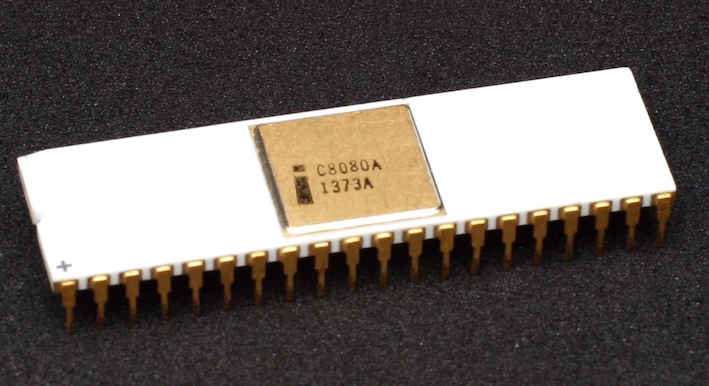

История развития процессоров: из 70-х в 90-е
Центральный процессор представляет из себя сложную интегральную схему, которая является одним из ключевых составляющих элементов современного ПК. Первые компьютеры появились примерно в 40-х годах прошлого века, работая на электромеханических реле и вакуумных лампах. Они обеспечивали функционирование первых вычислительных машин. В 60-х годах появились первые интегральные микросхемы которые на долгое время стали неотъемлемой частью любого вычислительного устройства. Началом эпохи современных CPU можно смело назвать 1971-й год.
Intel 4004

Первым однокристальным микропроцессором считается 4-битный Intel 4004, вышедший 15 ноября 1971 года. Компания Intel только начинала свой путь становления и ее создатели, Роберт Нойс, Гордон Мур и Эндрю Гроув, потратили немало сил на процесс развития. Благодаря вкладу итальянского физика Федерико Фаджина, инженерам компании удалось разместить ключевые компоненты на один чип и создать микропроцессор 4004.
Intel 4004 производился по 10-мкм техпроцессу, насчитывал 2250 транзисторов и работал на частоте 108 кГц (проводил 92 600 операций в секунду). Частота синхронизации была 740 кГц. Объем памяти доходил до 4 Кб, разрядность шины — 4 бита. Площадь кристалла составляла 12 мм2.
Intel 8008

В начале 70-х компания выпустила первый 8-битный центральный процессор Intel 8008. Он разрабатывался одновременно с 4004 под заказ для Computer Terminal Corporation (в последствии Datapoint). Но компания отказалась от CPU (как и от сотрудничества с Intel) из-за того, что процесс создания микросхемы вышел за пределы установленных сроков, а его характеристики не соответствовали ожиданиям.
По технических характеристикам микропроцессор 8008 во многом соответствовал предыдущей версии. Он производился по тому же 10-мкм техпроцессу и содержал 3500 транзисторов. Внутренний стек поддерживал 8 уровней, а объем памяти был 16 Кб. Тактовая частота оказалась ниже, чем у 4004, она составляла 500 кГц. По скорости 8-битный процессор Intel отставал от 4-битного. Разрядность шины была 8-бит. Процессор мог обратиться к 8 портам ввода и 24 портам вывода.
Одной из первых компьютерных систем на основе микропроцессора стал проект Sac State 8008 (1972 год). Это был полноценный микрокомпьютер с дисковой ОС, цветным дисплеем, ОЗУ 8 Кб и диском 3+2 Мб, клавиатурой, модемом, принтером. Он предназначался для обработки и хранения медицинских записей.
Intel 8080
Весной 1974 года компания Intel выпустила усовершенствованную версию — 8-битный микропроцессор Intel 8080. Он производился по новому 6-мкм техпроцессу с использованием технологии NMOS, позволяющей разместить на кристалле 4758 транзисторов. Тактовая частота составляла 2 МГц (со временем 2,5 МГц, 3,1 МГц и 4 МГц), объем памяти — 64 Кб. Разрядность шины данных составляла 8-бит, а шины адреса — 16-бит. У 8080 была весьма развита система команд: 16 команд передачи данных, 31 команда для их обработки, 28 команд для перехода (с прямой адресацией), 5 команд управления.
За счет высокой производительности процессора пользовался успехом. На базе Intel 8080 компания MITS выпустила микрокомпьютер Altair-8800. Несмотря на скромные характеристики (256 байт оперативной памяти, отсутствие монитора и клавиатуры) он обрел небывалую популярность и раскупался очень быстро.
Существовало немало клонов Intel 8080 от других компаний, таких, как National Semiconductor, NEC, Siemens и AMD. Был и советский аналог от Киевского НИИ микроприборов — микропроцессор КР580ВМ80А (1977 год).
Motorola 6800

В 1974 году компания Motorola выпустила свой процессор — 6800. Кристалл производился по 6-мкм техпроцессу, с тактовой частотой 2 МГц и памятью 64 Кб. Использовалась технология N-МОП. Процессор имел 16-битную адресную шину и систему команд из 78 операций. Присутствовал индексный регистр.
Motorola 6800 был весьма популярным, он применялся во многих ПК. На базе его архитектуры были созданы микроконтроллеры Motorola 6801 и 6803.
...